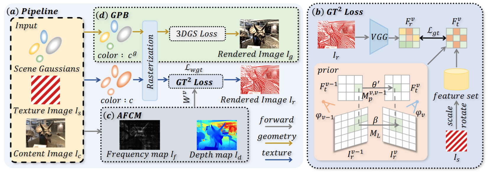
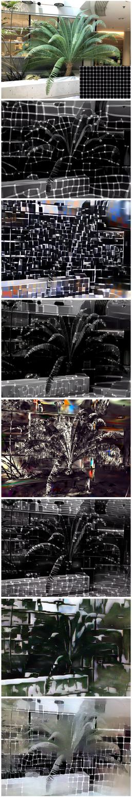
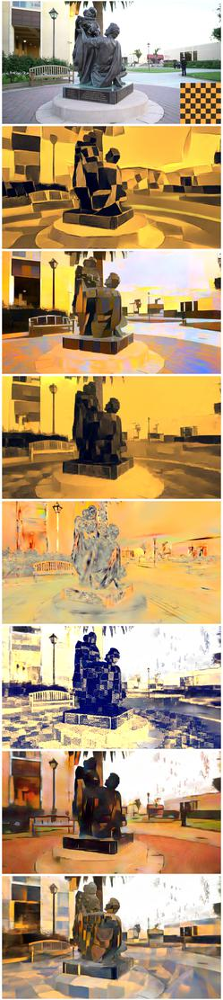
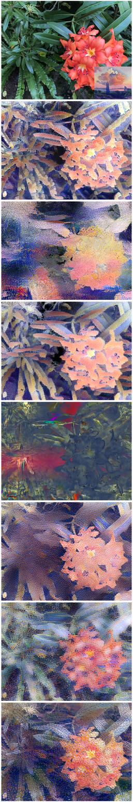
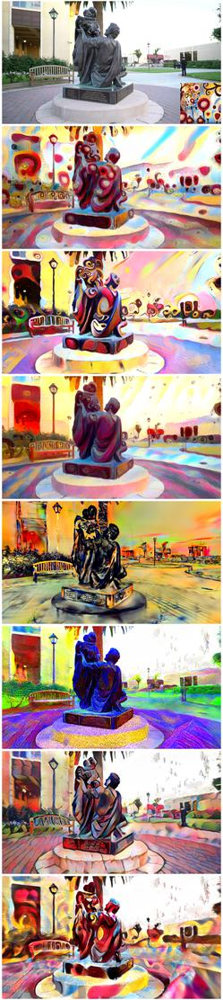

Transferring 2D textures onto complex 3D scenes plays a vital role in enhancing the efficiency and controllability of 3D multimedia content creation. However, existing 3D style transfer methods primarily focus on transferring abstract artistic styles to 3D scenes. These methods often overlook the geometric information of the scene, which makes it challenging to achieve high-quality 3D texture transfer results. In this paper, we present GT²-GS, a geometry-aware texture transfer framework for gaussian splatting. First, we propose a geometry-aware texture transfer loss that enables view-consistent texture transfer by leveraging prior view-dependent feature information and texture features augmented with additional geometric parameters. Moreover, an adaptive fine-grained control module is proposed to address the degradation of scene information caused by low-granularity texture features. Finally, a geometry preservation branch is introduced. This branch refines the geometric parameters using additionally bound Gaussian color priors, thereby decoupling the optimization objectives of appearance and geometry. Extensive experiments demonstrate the effectiveness and controllability of our method. Through geometric awareness, our approach achieves texture transfer results that better align with human visual perception.





@article{liu2025gt2,
title={GT2-GS: Geometry-aware Texture Transfer for Gaussian Splatting},
author={Liu, Wenjie and Liu, Zhongliang and Shu, Junwei and Wang, Changbo and Li, Yang},
journal={arXiv preprint arXiv:2505.15208},
year={2025}
}